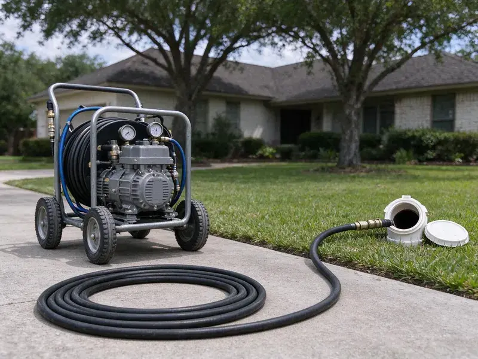

Hydro Jetting in Bellflower, CA
Safe, thorough hydro jetting for homes and businesses in Bellflower, CA, with a camera check before and after.
- Same-Day Jetting Available
- High-Pressure Technology
- Removes Tough Buildup
- Prevents Future Blockages

Expert Hydro Jetting Services in Bellflower, CA.
Call for a quote and we will inspect the line first to set the correct pressure and nozzle.
Professional Hydro Jetting Services in Bellflower, CA for Clear Drains
When conventional snaking is not enough, hydro jetting uses high-pressure water to scour the inside of your pipes, restoring them to near-original condition. FKM Plumbing provides this thorough drain cleaning solution for homes and businesses throughout Bellflower, CA.
Our expertise includes:
- Root removal and heavy grease buildup clearance
- Pre and post jetting video inspection with recordings
- Rotating, root-cutting and penetrating nozzle selection

Additional Drain Services Services in Bellflower, CA
From stubborn kitchen clogs to main sewer backups, our drain services in Bellflower, CA restore full flow fast and keep it that way.


Customers
Why Choose FKM Plumbing for Hydro Jetting in Bellflower, CA?
We match the machine and nozzle to your pipe. Proper setup gives a deep clean while protecting older materials found in many homes.
- Inspection First, We camera the line before jetting so pressure settings match the pipe condition.
- Full-Wall Cleaning, Jetting scrubs the pipe circumference instead of leaving a thin channel through the clog.
- Root Removal, High-pressure water effectively cuts through and flushes out tree roots that get into sewer lines.
Citywide Coverage
No matter where you are in Bellflower, CA, you can count on FKM Plumbing for timely and professional hydro jetting. We are committed to keeping the drains flowing smoothly for all our local customers.
Experienced Team
Our jetting techs are trained to read pipe conditions on camera and choose pressure, flow and nozzle type to match. They have cleared everything from restaurant grease lines to root-filled clay laterals.
Safety-First Approach
Our equipment is regularly inspected and maintained for safe and efficient performance. We take every precaution, including a pipe camera inspection before jetting, to prevent any damage to your plumbing system.
Trusted Certified Bellflower Plumbing Services Professionals
At FKM Plumbing, we take pride in providing certified plumbing services throughout Bellflower, CA. Backed by leading industry credentials, our experienced plumbers combine technical skill with genuine customer care. Whether it is repair, installation, or maintenance, we follow strict safety and quality standards to deliver long-lasting results you can trust.
Call Us Now PHCC Plumbing Contractor Recognition
PHCC Plumbing Contractor Recognition Better Business Bureau (BBB) Accreditation
Better Business Bureau (BBB) Accreditation Angi Certified Pro
Angi Certified Pro ISO 9001 Quality Management Certification
ISO 9001 Quality Management CertificationAdvanced Hydro Jetting Services in Bellflower, CA
Camera Inspection and Hydro Jetting in Bellflower, CA
Before performing any hydro jetting, especially for challenging clogs, FKM Plumbing always recommends a careful sewer camera inspection. This lets us accurately locate the blockage, identify its nature, and assess the condition of your pipes. This crucial step confirms that hydro jetting is the right solution and helps us select the correct pressure and nozzle, safeguarding your plumbing system in Bellflower, CA.

Preventative Maintenance Hydro Jetting in Bellflower, CA
Proactive hydro jetting can save Bellflower, CA property owners from unexpected plumbing emergencies. For homes and businesses with a history of drain issues or those prone to specific types of buildup, scheduled hydro jetting is an excellent preventative measure. By regularly removing scale, grease, and other debris before they cause a full blockage, you can lengthen the life of your pipes, avoid costly repairs, and maintain consistent drainage. We can set up a custom maintenance schedule for your needs.
Emergency Hydro Jetting in Bellflower, CA
A completely backed-up drain or sewer line requires immediate attention. FKM Plumbing offers emergency hydro jetting across Bellflower, CA, to address critical blockages quickly. Our technicians are available to respond promptly, minimizing water damage and restoring your plumbing as soon as possible. We understand that some clogs just can't wait.
Sewer Line Hydro Jetting in Bellflower
When your main sewer line has a blockage, it can affect all the drains in your Bellflower home or business. Our sewer line hydro jetting service is equipped to clear even the most severe obstructions in these larger diameter pipes. We use high-definition cameras to inspect the line before and after jetting, confirming the blockage is completely removed and the pipe is clean. Most homes in Southern California sit on concrete slabs, so slab leaks often show up as warm floors, damp carpet, or an unexplained jump in the water bill.
Scale Removal in Cast Iron Pipes in Bellflower
Cast iron drains in older homes build up rust tubercles and mineral scale, and hard water speeds that process. Jetting with the right nozzle can strip much of this buildup and restore flow. We keep pressure in a safe range for aged iron and watch the camera for thin spots. This cleaning is also the standard prep step before pipe lining. Clean pipe walls help a liner bond properly.
Kitchen Line Grease Jetting in Bellflower, CA
Kitchen drains are the most common grease trouble spot in any home or restaurant. Grease clings to pipe walls and hardens, especially where the line runs flat under a slab. Jetting melts and scrubs this buildup away instead of just poking a hole through it. We use smaller hose and nozzles sized for 1-1/2 and 2 inch kitchen lines. This keeps your sink and dishwasher draining properly for much longer.
Preventive Maintenance Jetting in Bellflower
If your line has a history of clogs, a maintenance plan can keep it clear. We schedule jetting every 12 to 24 months for homes and more often for busy commercial kitchens. Regular cleaning prevents the buildup from ever reaching the point of a backup. It also gives us a chance to camera the line and catch new problems early. Maintenance customers get priority scheduling.

Hydro Jetting Before Pipe Lining in Bellflower, CA
Cured-in-place pipe lining needs a clean surface to adhere and seal correctly. We jet the host pipe to remove roots, scale and debris, then camera it to confirm it is ready. Any heavy obstructions are cut out before the liner is installed. Skipping this step can lead to wrinkles or poor bonding. Proper prep is part of why lined pipe can last for decades.
Expert Hydro Jetting Services Near Me in Bellflower, CA
When you search for hydro jetting near me in Bellflower, CA, FKM Plumbing is your reliable local expert. We are very familiar with the plumbing infrastructure and common issues affecting homes and businesses throughout the area. Being close by means faster response times and reliable service when you need it most.
We pride ourselves on being trusted local experts for drain cleaning solutions. When you choose FKM Plumbing for hydro jetting in Bellflower, you are choosing a company focused on lasting results and great customer service right in your neighborhood.
FKM Plumbing at a Glance
- Fully licensed plumbing team covering Bellflower, CA
- 24/7 emergency service with same-day scheduling
- Clear written estimates, no hidden fees
- 4.8-star rated by 754+ Southern California customers
Bellflower Map
Bellflower Information
- Population
- 75,122
- Area codes
- 562/714/626
- Service area
- Bellflower and communities within 40 miles
- Nearby
- Lakewood, Norwalk, Downey, Lynwood
Hydro jetting is especially important for homes in Bellflower, CA due to tree root intrusion into sewer lines and the buildup of mineral deposits and grease common in older plumbing systems.
Expert Services
Trust our professionals for reliable FKM Plumbing solutions in Bellflower, CA.
Our Specialized Plumbing Services in Bellflower, CA
At FKM Plumbing, we provide a complete range of plumbing services across Bellflower, CA. From leak detection to full system installations, our team ensures fast, precise, and affordable service for both residential and commercial properties. Explore our core services below:


How Our Hydro Jetting Process Works in Bellflower, CA
We follow a systematic approach to deliver strong drain cleaning results every time we perform hydro jetting in Bellflower, CA.
Request a Quote
Call (213) 871-0701 to speak with our helpful team about your drain issues. We will gather initial information and schedule a convenient time for a professional assessment.
Pipe Inspection
Our technician will perform a detailed camera inspection of your pipes to identify the exact location and nature of the blockage. This step is crucial for safety and effectiveness.
Hydro Jetting
Using specialized nozzles and high-pressure water, we meticulously clean the pipe walls, breaking down and flushing out all obstructions and buildup.
Frequently Asked Questions About Hydro Jetting in Bellflower
Residential hydro jetting in Bellflower typically costs $350 to $800, depending on line length, access and how heavy the buildup is. Commercial jetting is often priced by the hour and may run higher.
FKM Plumbing backs our hydro jetting in Bellflower, CA. We typically offer a warranty on our workmanship, with the length depending on the service and nature of the clog. We will discuss all warranty details with you before starting any work.
A thorough jetting often keeps a line clear for a year or more, depending on use and roots. Lines with heavy root intrusion may require maintenance or a repair.
Key signs you might need hydro jetting include frequently recurring clogs in the same drain, multiple slow drains throughout your home, persistent foul odors coming from drains, or gurgling sounds from toilets or drains. These often point to a significant buildup or blockage that needs more than just a snake.
Snaking uses a rotating cable to break through a clog. Jetting uses pressurized water to clean the entire pipe wall and wash debris away.
FKM Plumbing uses professional-grade hydro jetting equipment from established manufacturers like Spartan Tool and MyTana. These brands are known for their reliability, powerful performance, and safety features, so we can deliver the most effective cleaning for your pipes.
Yes, we guarantee our jetting work in writing. The term depends on pipe condition found during the camera inspection.
While small, low-pressure drain jetters are available for rent, professional hydro jetting equipment is far more powerful and requires training to operate safely and effectively. Improper use can damage pipes, cause injury, or fail to clear the blockage. For severe clogs, it is always best to rely on experienced professionals like FKM Plumbing.
What People Are Saying About Our Plumbing Experts?

Sofia M.
Two new toilets installed in one visit, no mess left behind, and the tech even adjusted a faucet he noticed was dripping. Fair pricing and really friendly.
Toilet Installation · Compton, CA
Robert G.
The trenchless sewer replacement saved our front yard. They walked us through the camera inspection footage first so we knew exactly what we were paying for.
Sewer Line Replacement · South Gate, CA
Emily R.
I called FKM Plumbing for plumbing repair, and the technician was fast, polite, and thorough. They explained the problem clearly and fixed it the same day. I will definitely hire them again. Highly recommended!
Plumbing Repair · Lakewood, CALaura S.
I scheduled a water heater replacement, and the team made the process smooth and affordable. The new unit works perfectly, and they cleaned up after completing the job.
Water Heater Replacement · Lakewood, CA
Patricia H.
We had a slab leak that two other companies could not find. FKM Plumbing located it in under an hour, explained our options, and the price matched the quote to the dollar.
Slab Leak Repair · Norwalk, CAJames P.
Our commercial plumbing system had a leak under the sink, and FKM Plumbing handled it professionally. The plumbers arrived quickly and restored everything without disruption to our customers.
Commercial Plumbing · Compton, CA